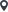
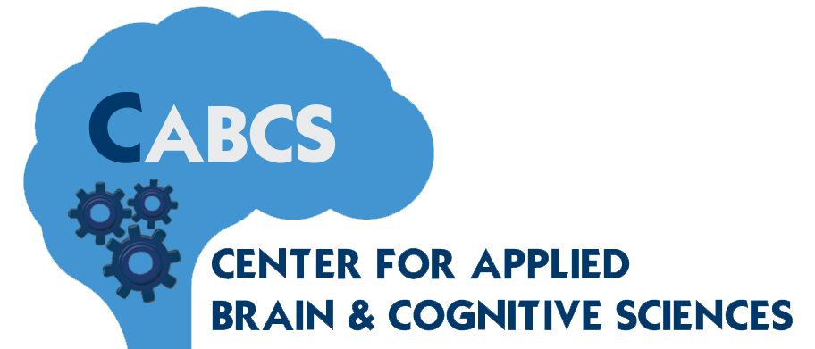
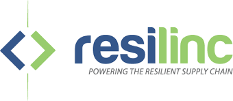
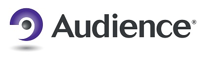

Booz Allen Hamilton
UI/UX Designer – Senior Consultant
Washington, DC
National Institute of Allergy & Infectious Diseases (NIAID, NIH)
- Developed the visual theme of an end-to-end intranet redesign and migration (SharePoint to Drupal 8) to achieve the following measurable outcomes:
- Increase findability of intranet content.
- Improve task completion rates.
- Minimize cognitive load on users.
- Increase utilization of the intranet as a resource for all employees.
- Led creative discussions with stakeholders throughout the organization:
- Gained key insights for creating a style with universal appeal.
- Facilitated discussions at all levels about how the intranet can be a better employee resource.
- Transformed discussions into concrete requirements that informed the visual strategy for the project.
- Created the Pattern Lab instance for Drupal 8, using HTML, CSS, JavaScript, and Twig, that serves as the creative guide and design platform to reduce front-end development time.
- Built a master prototype that will guide the Drupal development team in creating UX-verified layouts.
- Designed and facilitated an Eye Tracking study to evaluate and enhance the visual design of the intranet and public website.
- Designed style tiles for a broader initiative to unify and augment the visual style of NIAID web properties across the organization.
- Facilitated a Design Sprint with key stakeholders to assess and improve the overall digital experience of NIAID employees.
Innovation Center – Internal Website (Enterprise-Wide Web App) Redesign
- Conducted multiple brainstorming sessions with site stakeholders to create the design and development roadmap for a four-stage deployment process.
- Gained project plan approval from directorate leadership for the web app, accessible to 25K+ employees.
- Produced speculative wireframes and high-fidelity mockups to more effectively display content and improve user comprehension/satisfaction.
- Managed the UI development and directed interaction choices to increase site user experience.
- Led two developers toward completing Phase 1 of the site remodel effort.

Red Hat, Inc., Tufts University
Tufts Team Lead & Designer (Senior Capstone Project)
Tufts University
- Led the design team of the Ansible Galaxy redesign, a web-based IT automation sharing platform.
- Conducted human factors research to characterize users and identify areas of UX improvement.
- Employed design principles and methods to develop an improved UI.

Center for Applied Brain & Cognitive Sciences, Tufts University
Human Factors/Engineering Psychology Researcher (Full-time summer/paid, course credit)
Tufts University
- Explored an extension of the adjustable autonomy concept working with quadrotor drones.
- Led research and development for an operator monitoring scheme to assess user cognitive state.
- Designed the experimental protocol for testing the adjustable autonomy concept.
- Researched a variety of physiological indices for potential operator monitoring input modalities.
- Coded a Unity simulation of the autonomy experiment and tested participants for data collection/analysis.

Resilinc, Inc.
UI/UX Intern (Full-time summer/paid intern)
Milpitas, CA
Resilinc is a leading cloud provider of global supply chain risk intelligence and analytics.
- Developed initial mobile app prototype for a real-time supply chain event monitoring service.
- Designed an application dashboard to optimize contact interaction and task management.
- Coded a program utilizing dashboard data to determine the most frequently used app modules.
- Assisted in determining the style and theme for a new website and designed key branding elements.
- Created the website (theresiliencycouncil.org) using WordPress, HTML, and CSS.

Audience, Inc.
Engineering/Algorithm Intern (Full-time summer/paid intern)
Mountain View, CA
Audience is a leader in advanced voice and audio processing technologies for mobile devices.
- Collected, categorized, and documented field data for a machine learning project.
- Performed research for a new work management process leveraging Amazon Mechanical Turk.
- Created a detailed manual describing the process for hosting audio files on Mechanical Turk.
- Prepared an informational presentation for internal education/training purposes.